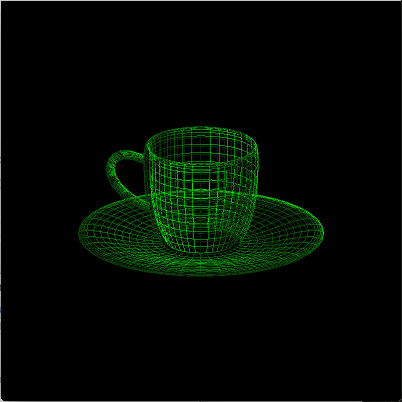
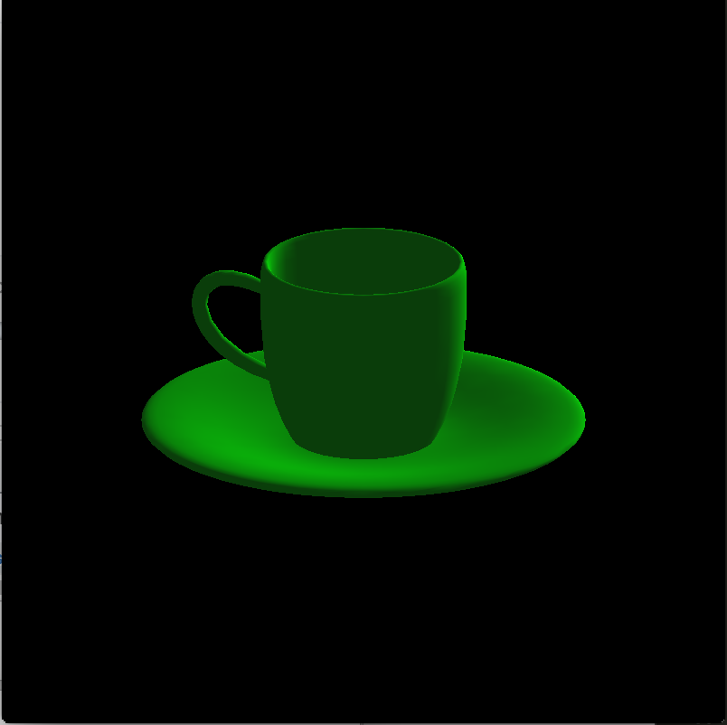
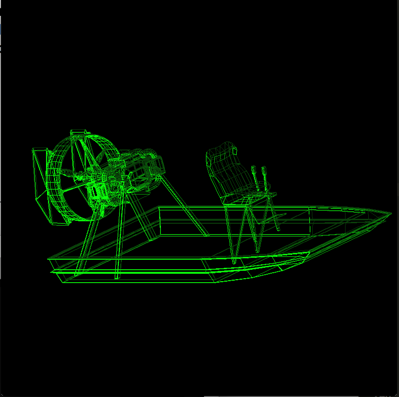
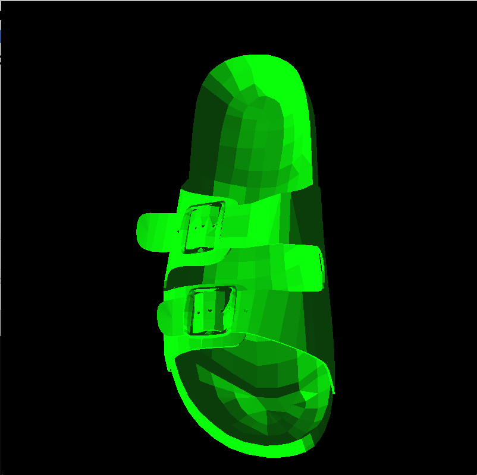

Wireframe Teacup
This is a wireframe rendering of a teacup using uniform tessellation.

Shaded Teacup
This is a shaded smooth rendering of a teacup using uniform tessellation.

Wireframe Teapot
This is a wireframe rendering of a teapot using adaptive tessellation.

Shaded Teapot
This is a shaded smooth rendering of a teacup using uniform tessellation.

Airboat
This is a wireframe rendering of an airboat that was read from an obj file.

Sandal
This is a shaded rendering of a sandal that was read from an obj file.